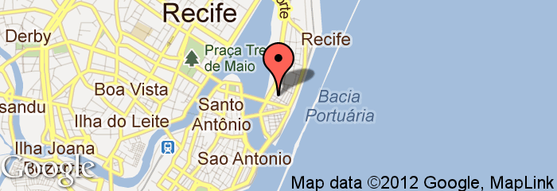

Sobre
Ruby on Rails em Pernambuco. 21 de Abril.
No dia 21 de abril, Recife receberá mais um evento: Abril pro Ruby. Este será um evento gratuito para os amantes da tecnologia e desenvolvimento de software. O foco, claro, será a linguagem Ruby. Concebida em 1993 por Yukihiro Matsumoto para ser orientada ao ser humano, seus princípios são simplicidade, produtividade e diversão ao utilizá-la.
Venha aprender e trocar conhecimento com outros desenvolvedores interessados em fortalecer o cenário pernambucano em Ruby. O evento também trará palestras sobre temas que interessam a todas as plataformas.
Local
Auditório do Núcleo de Gestão do Porto Digital, na Rua do Apolo, 181, Cais do Porto, Recife, Pernambuco.
Palestras
-
Sistemas para o Mundo Real
Leandro da Silva, CIO, Locaweb
Muitos desenvolvedores se preocupam bastante com os aspectos estáticos dos sistemas que constroem, tais como se o código está bonito, se está idiomático, se está seguindo um determinado styleguide, entre outros bullet points do bom design de código; e isso é muito bom. Mas isso não é tudo. Há ainda o aspecto real da coisa, o Runtime. É no Runtime que ômis e mininus se sobressaem. E essa apresentação é sobre com o que os ômis mais se preocupam quanto estão escrevendo sistemas críticos – para o Mundo Real, é lógico.
-

-
Entre tapas e beijos: Uma história de amor entre um programador e Ruby On Rails
Thiago Diniz, CEO, Eventick
Com um forte background em engenharia de software e reuso, escolhi Java EE como linguagem de desenvolvimento para web, no entanto as dificuldades encontradas na plataforma Java me fizeram desistir de usá-la. Foi aí que conheci Rails, amor a primeira vista, um blog em 5 minutos…, mas nem tudo são flores. Demorei um pouco para perceber que para colocar um app no ar até ter um serviço na web, existe muito mais além dos 5 minutos.
-

-
Ecossistema Ruby
Bruno Andrade, Dev, LA Informática
Tudo que você pode fazer com ruby e muito mais ;)
-

-
APIs Hypermedia
Victor Cavalcanti, Dev, Locaweb
Bons serviços precisam prover APIs bem projetadas para expor seus recursos na web. Desde o início dos web services, muita coisa mudou, REST e Hypermedia trouxeram bons princípios para o design de APIs, fazendo um melhor uso do protocolo HTTP.
Inscrições
As inscrições são gratuitas e feitas através do Eventick. Para confirmar sua presença, clique aqui.